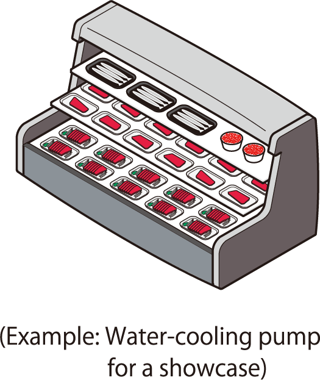
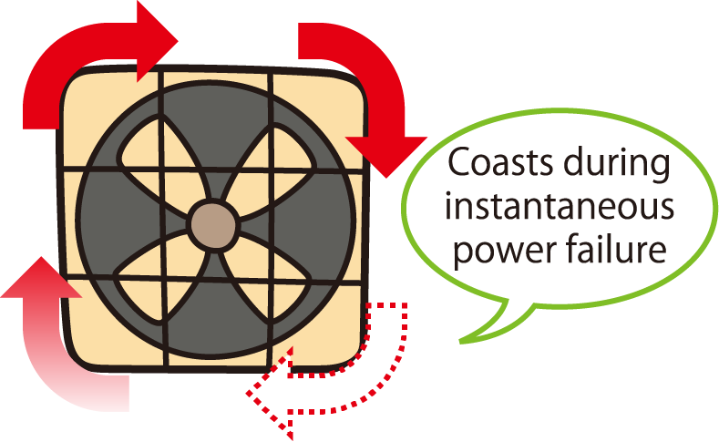
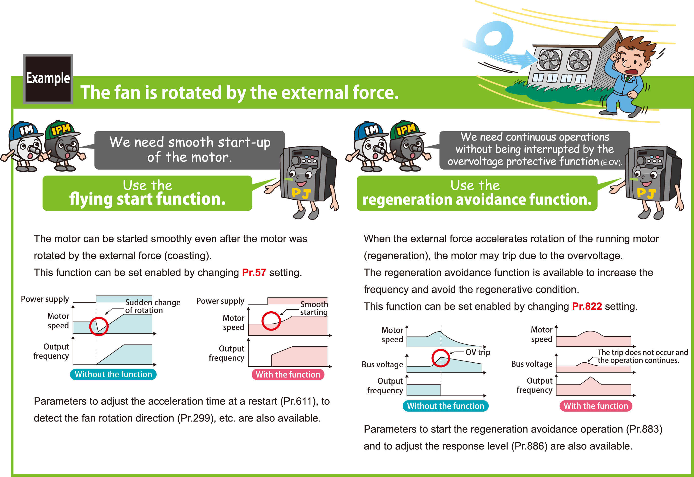

Inverters-FREQROL-F Series -FREQROL-F700PJ- Optimal untuk Aplikasi Kipas dan Pompa

Kontrol PID yang ditingkatkan
- Untuk menghemat energi dalam operasi kecepatan rendah: Fungsi pemutusan (tidur) keluaran PID
- Untuk mempersingkat waktu mulai kontrol PID: Fungsi peralihan otomatis PID
- Untuk aplikasi AC: Pengalihan putaran maju/mundur dengan sinyal eksternal
- Untuk menggunakan berbagai jenis detektor: Titik setel PID dan keluaran nilai terukur dalam tegangan (0 hingga 5V / 0 hingga 10V) dan arus (4 hingga 20mA)

Fungsi penghindaran regenerasi
- Frekuensi operasi secara otomatis ditingkatkan untuk mencegah terjadinya kesalahan tegangan berlebih regeneratif. Fungsi ini berguna saat beban diputar secara paksa oleh kipas lain di saluran.

Fungsi restart otomatis setelah kegagalan daya sesaat / fungsi start cepat
Setelah terjadi pemadaman listrik mendadak, pengoperasian dapat dimulai kembali dari kecepatan motor luncur.
Sekalipun arah putaran telah dibalik secara paksa, pengoperasian dapat dimulai kembali dengan lancar ke arah semula.

